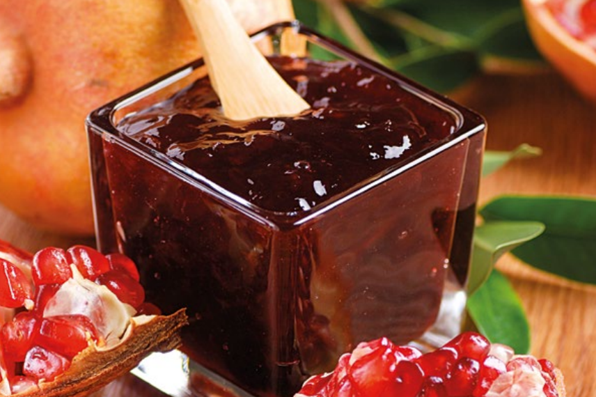

Mesfouf
Le mesfouf (مسفوف mesfuf), ou masfouf, appelé thameqfoult en région kabyle, est une variante de couscous à base de semoule roulée finement et de beurre, généralement accompagnée de petits pois ou de raisins secs. Il en existe de nombreuses variations salées ou sucrées dont certaines sont servies comme entremets ou pâtisseries. — Wikipidia
Mesfouf aux graines de grenade
Ingrédients et Quantités
| Ingrédients
| Quantité
|
| Couscous |
500g |
| Dates |
500g |
| Beurre |
200g |
| Grenade |
300g |
Salade de Grenade et Pomme
La salade de grenade et pomme est une délicieuse combinaison de saveurs sucrées et acidulées. Préparée avec des graines de grenade, des morceaux de pomme et d'autres ingrédients frais, cette salade offre une expérience gustative unique. Elle peut être servie en accompagnement ou en entrée légère.
Salade de Grenade et Pomme avec des graines de grenade
Ingrédients et Quantités
| Ingrédients
| Quantité
|
| Graines de grenade |
1 grenade |
| Morceaux de pomme |
4 pommes golden |
| Autres ingrédients frais |
40cl d'eau |
| soupe de sucre |
| citron |
Confiture de Grenade
La confiture de grenade est une délicieuse confiture riche en saveurs et bénéfices pour la santé. Préparée avec des graines juteuses de grenade, cette confiture offre une combinaison unique de douceur et d'acidité. Elle peut être dégustée sur du pain, utilisée comme garniture pour des desserts ou intégrée dans diverses recettes créatives.

Confiture de Grenade Maison
Ingrédients et Quantités
| Ingrédients
| Quantité
|
| Graines de grenade |
1kg |
| Sucre |
500 grammes |